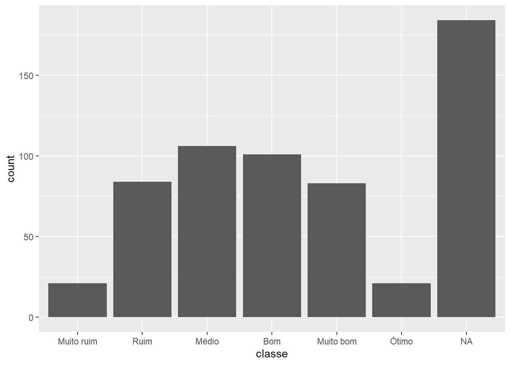

# checar se tem MC < MG# df |> # mutate(gen2 = str_replace(gen, "G", "GEN_"),# .after = gen) |> # mutate(cuidado = case_when(mc > mg ~ "Não", .default = "Sim")) |> # filter(!is.na(mg) & !is.na(mc)) |> # filter(cuidado == "Sim")# espacamento de 0.2 entre linhas# 50 plantas por metro linear# calcular numero de plantas por ha# calcula rendimento em sacas (60 kg) por hadfrg <- df |>mutate(gen2 =str_replace(gen, "G", "GEN_"),.after = gen) |>mutate(cuidado =case_when(mc > mg ~"Não", .default ="Sim"),icc = mg / mc,npha =100/0.2*100*50,rgsha = mg * npha /1000/60)quant <-quantile(dfrg$rgsha, c(0.05, 0.25, 0.5, 0.75, 0.95), na.rm =TRUE)dfrg <- dfrg |>mutate(classe =cut(dfrg$rgsha,breaks =c(-Inf, quant, Inf),labels =c("Muito ruim", "Ruim", "Médio", "Bom", "Muito bom", "Ótimo"),include.lowest =TRUE) )ggplot(dfrg, aes(classe)) +geom_histogram(stat="count")
Warning in geom_histogram(stat = "count"): Ignoring unknown parameters:
`binwidth` and `bins`

Code
# classificação com base em variáveisdfrg <- dfrg |>mutate(ideotipo =case_when( ap <80& ac >50& mg >4~"GRÃO", nr <4& ac >60& ap >100~"FIBRA",.default ="DESCARTAR" ) )
Warning: There were 826 warnings in `summarise()`.
The first warning was:
ℹ In argument: `across(where(is.numeric), .fns = stats)`.
ℹ In group 29: `tipo = "DOURADA"`, `gen = "G133"`.
Caused by warning in `min()`:
! nenhum argumento não faltante para min; retornando Inf
ℹ Run `dplyr::last_dplyr_warnings()` to see the 825 remaining warnings.
Code
dadosgen_mmg <-left_join(dadosgen, mmg)
Joining with `by = join_by(gen)`
Source Code
---title: "Aula 06 - Mutação e resumo"format: html---# Pacotes e dados```{r}library(rio)library(tidyverse)df <-import("laboratorio.xlsx", setclass ="tbl") |>rename_with(tolower)```# Mutação de dados```{r}# checar se tem MC < MG# df |> # mutate(gen2 = str_replace(gen, "G", "GEN_"),# .after = gen) |> # mutate(cuidado = case_when(mc > mg ~ "Não", .default = "Sim")) |> # filter(!is.na(mg) & !is.na(mc)) |> # filter(cuidado == "Sim")# espacamento de 0.2 entre linhas# 50 plantas por metro linear# calcular numero de plantas por ha# calcula rendimento em sacas (60 kg) por hadfrg <- df |>mutate(gen2 =str_replace(gen, "G", "GEN_"),.after = gen) |>mutate(cuidado =case_when(mc > mg ~"Não", .default ="Sim"),icc = mg / mc,npha =100/0.2*100*50,rgsha = mg * npha /1000/60)quant <-quantile(dfrg$rgsha, c(0.05, 0.25, 0.5, 0.75, 0.95), na.rm =TRUE)dfrg <- dfrg |>mutate(classe =cut(dfrg$rgsha,breaks =c(-Inf, quant, Inf),labels =c("Muito ruim", "Ruim", "Médio", "Bom", "Muito bom", "Ótimo"),include.lowest =TRUE) )ggplot(dfrg, aes(classe)) +geom_histogram(stat="count")# classificação com base em variáveisdfrg <- dfrg |>mutate(ideotipo =case_when( ap <80& ac >50& mg >4~"GRÃO", nr <4& ac >60& ap >100~"FIBRA",.default ="DESCARTAR" ) )```# Resumo de dados## Funções auxiliares```{r}cv <-function(x, na.rm =TRUE){sd(x, na.rm = na.rm) /mean(x, na.rm = na.rm) *100}cv(dfrg$mg)confint <-function(x, na.rm =TRUE, return ="inf"){ n <-length(na.omit(x)) ttab <-qt(0.975, n -1) epm <-sd(x, na.rm = na.rm) /sqrt(n) media <-mean(x, na.rm = na.rm)if(return =="inf"){ media - ttab * epm } else{ media + ttab * epm }}```## Uma variável, uma estatística```{r}dfrg |>summarise(mg_media =mean(mg, na.rm =TRUE) )```## Uma variável, várias estatísticas```{r}dfrg |>summarise(media =mean(mg, na.rm =TRUE),min =min(mg, na.rm =TRUE),max =max(mg, na.rm =TRUE),dp =sd(mg, na.rm =TRUE),var =var(mg, na.rm =TRUE),cv =cv(mg),li =confint(mg),ls =confint(mg, return ="sup"), )stats <-list(media = \(x){mean(x, na.rm =TRUE)},min = \(x){min(x, na.rm =TRUE)},max = \(x){max(x, na.rm =TRUE)},dp = \(x){sd(x, na.rm =TRUE)},var = \(x){var(x, na.rm =TRUE)},cv = \(x){cv(x)},li = \(x){confint(x)},ls = \(x){confint(x, return ="sup")},n = \(x){length(x)},nvalid = \(x){length(na.omit(x))})# usando across()dfrg |>summarise(across(mg, .fns = stats) )```## Muitas variáveis, uma estatística```{r}# um intervalo de variáveisdfrg |>summarise(across(ap:mg, .fns = \(x){mean(x, na.rm =TRUE)}) )# todas as variáveis numéricasdfrg |>summarise(across(where(is.numeric), .fns = \(x){mean(x, na.rm =TRUE)}) )```## Muitas variáveis, várias estatísticas```{r}# dez estatísticas para todas as variáveis numéricasestatisticas <-dfrg |>summarise(across(where(is.numeric), .fns = stats) ) |>pivot_longer(everything()) |>separate_wider_delim(cols = name, names =c("variavel", "stat"), delim ="_") |>pivot_wider(names_from = stat, values_from = value)```## Estatísticas por grupo```{r}mmg <-import("mmg.xlsx") |>select(gen = GEN, mmg)dadosgen <-dfrg |>summarise(across(where(is.numeric), .fns = stats),.by =c(tipo, gen) ) |>select(-contains("img_"), -contains("npha_"))dadosgen_mmg <-left_join(dadosgen, mmg)```